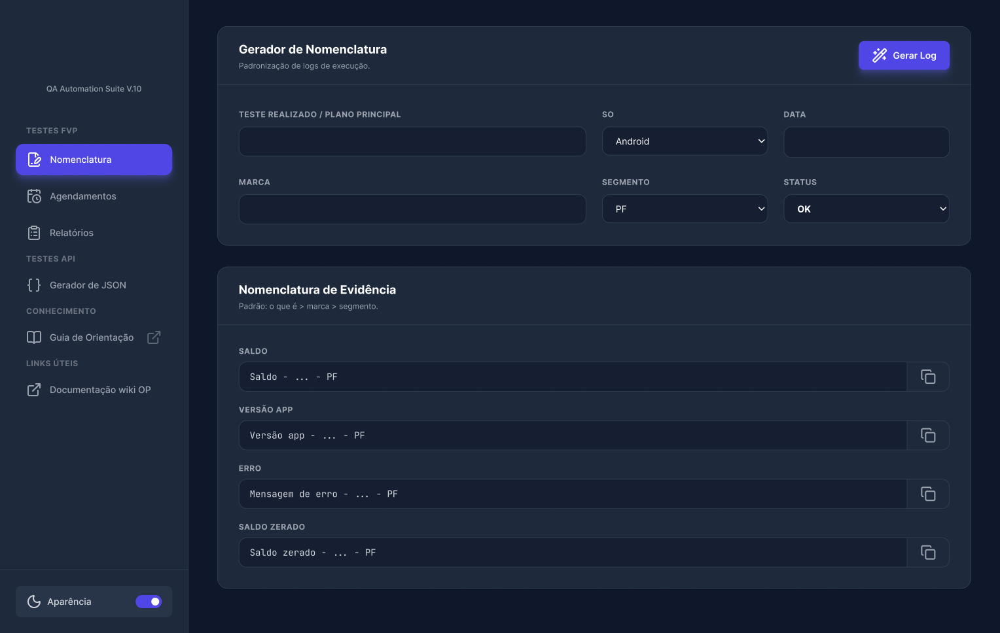
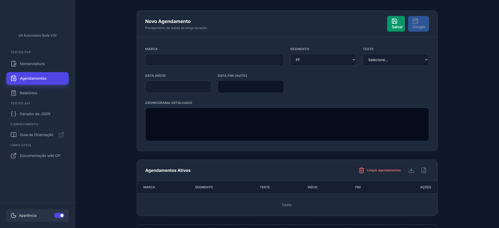
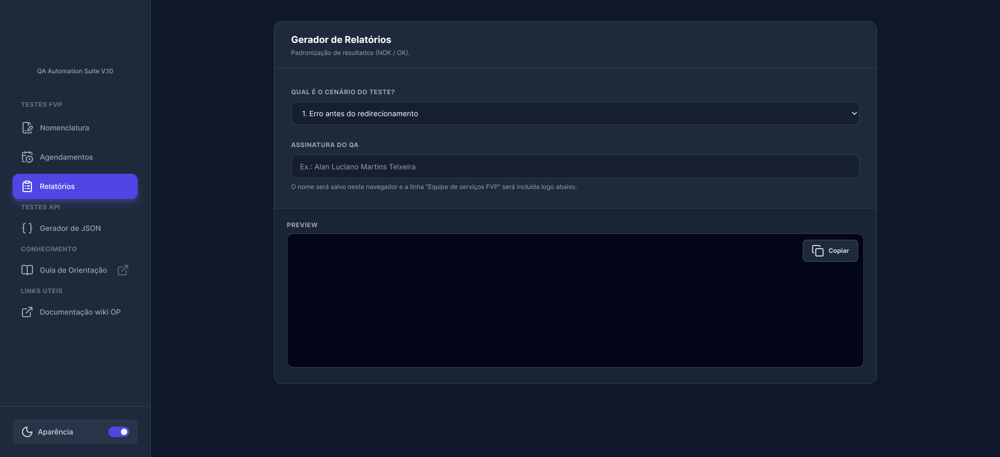

Dados de quem participa do teste
- 01–03O bloco PF mantém nome, CPF e dados bancários no mesmo contexto.
- 04–06O bloco PJ separa empresa, CNPJ e dados bancários sem misturar naturezas distintas.
Produto real em operação · Time de Serviços do Open Finance
Implementada e utilizada pelo time de Serviços do Open Finance, a solução começou atendendo uma necessidade específica e evoluiu conforme novos problemas eram observados durante o processo de execução. Hoje, a ferramenta reúne a geração de payloads, a organização de dados PF e PJ, a padronização de nomenclaturas e relatórios e o acompanhamento de testes de longa duração em Open Finance.

O contexto
A execução reúne instituição, AS-ID, segmento, dados PF/PJ, tipo de teste, payload, Test ou Retest, ciclo, evidências, cronogramas e relatórios. Cada informação isolada parece simples; conectadas, formam uma jornada operacional com dependências e conferências.
Localizar informações, alternar contextos e nomear resultados amplia a necessidade de consistência. A oportunidade estava em incorporar parte desse conhecimento à própria interface.
Hipótese de produto
E se o QA informasse o contexto da execução e a ferramenta cuidasse das regras?
Princípios da solução
01 / 04
Gerador de payloads
Dados da pessoa, instituição e teste são reunidos antes da geração. O tipo de teste deixa de ser apenas uma seleção: carrega API, versão, jornada e contexto do payload.
02 / 04
Nomenclatura
Informações da execução alimentam uma estrutura comum para logs e nomes de evidências, preservando variações como saldo, versão do app, erro e saldo zerado.

03 / 04
Agendamentos
Marca, segmento, teste e período organizam o acompanhamento. Data final automática, cronograma detalhado e Google Calendar conectam preparação e continuidade.

04 / 04
Relatórios
O cenário selecionado orienta um modelo que pode ser revisado antes de copiar. A estrutura apoia consistência sem substituir a análise do QA.

Casos de uso
Em vez de operar páginas isoladas, o QA utiliza diferentes recursos para dar continuidade à mesma execução.
Impactos qualitativos
Sem métricas comprovadas, os resultados são apresentados como efeitos suportados pelo funcionamento documentado.
Aprendizados
Uma solução interna não precisa nascer grande. A QA Automation Suite começou com um problema específico e incorporou recursos conforme novas necessidades apareceram. O principal aprendizado foi deixar de olhar para tarefas isoladas e enxergar a jornada operacional como um sistema conectado.
Vamos construir o próximo projeto
Se você procura alguém capaz de conectar Produto, UX, regras de negócio, tecnologia e qualidade, vamos conversar.